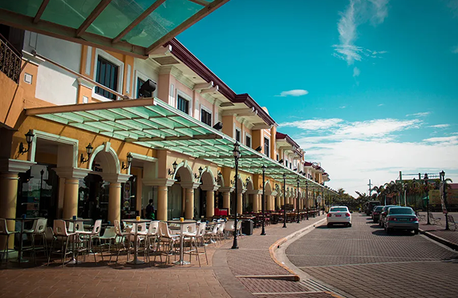

Historical & Cultural Landmarks
Molo Church (St. Anne Parish Church)
A stunning neo-Gothic church known as the "Feminist Church" due to its all-female saint statues.
Calle Real (Old Downtown Iloilo)
A heritage street with beautifully preserved colonial-era buildings.
Natural & Outdoor Attractions
Gigantes Islands
A breathtaking island-hopping paradise with pristine white sand beaches and limestone cliffs.
Garin Farm (San Joaquin)
A pilgrimage site featuring a stairway to a heaven-like white cross, plus an interactive farm experience.
Modern & Leisure Destinations
Festive Walk Iloilo
A lively shopping and entertainment hub perfect for relaxation and exploration.

SM City Iloilo & Plazuela de Iloilo
Ideal for shopping, dining, and leisure activities.